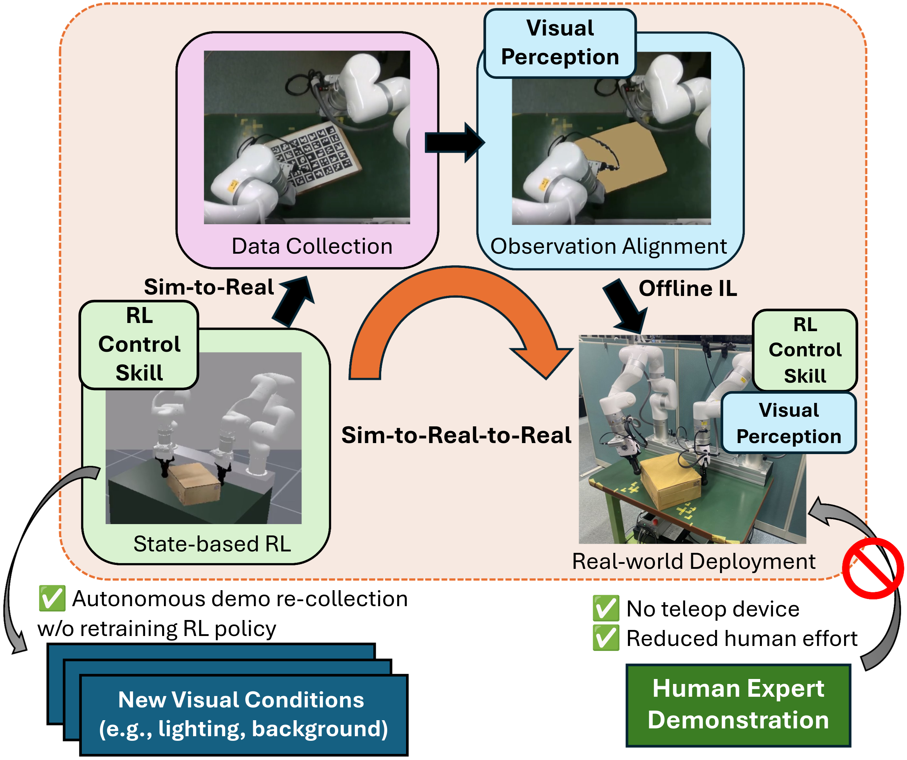
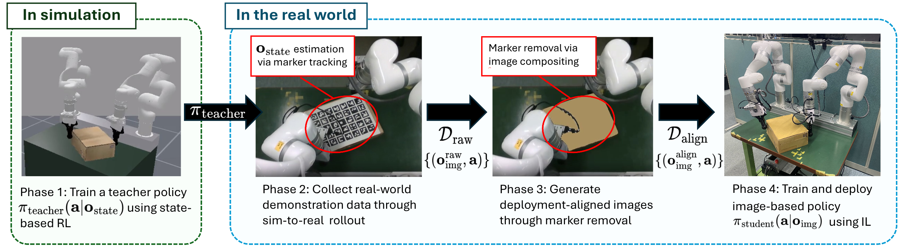
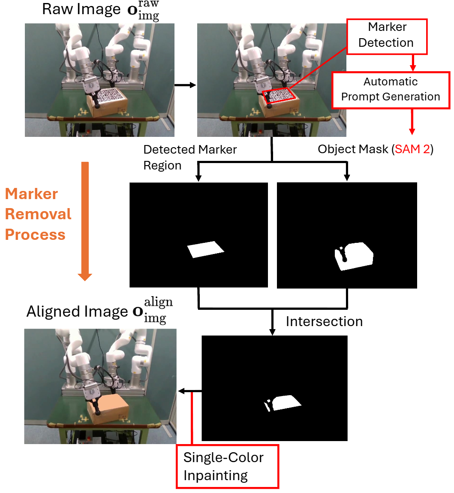
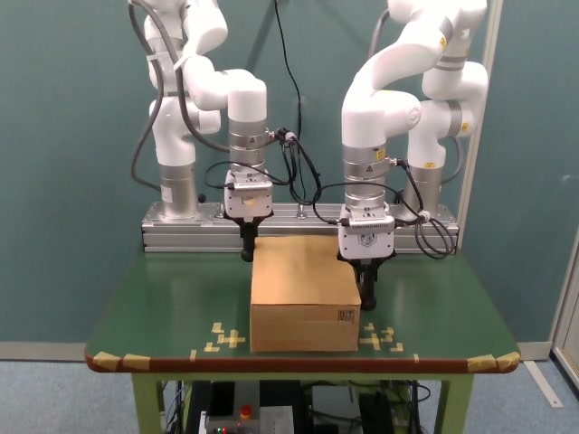
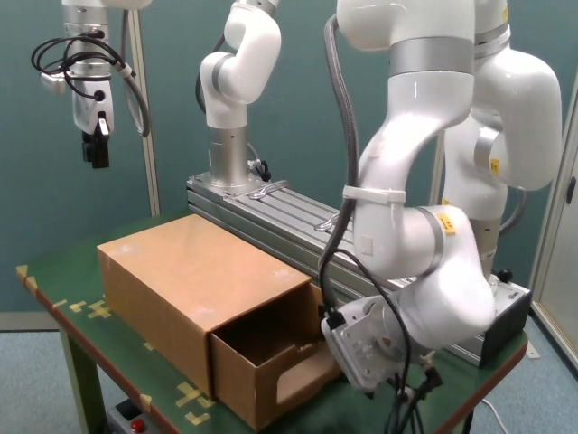
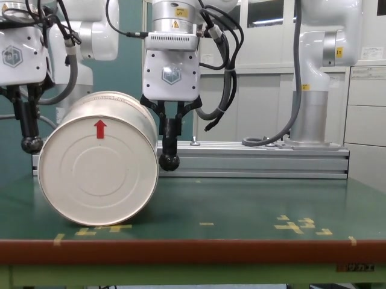
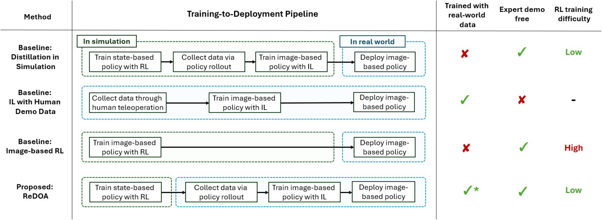

Train a state-based teacher
Learn a task policy in simulation using object and robot state, separating control learning from visual perception.
1University of Tsukuba 2AIST

Learning image-based manipulation policies from real-world experience, without expert demonstrations.
Data-driven learning for general-purpose robotic manipulation presents a fundamental trade-off between data-collection cost and adaptability to real-world environments. Imitation learning requires costly human demonstrations, whereas simulation-based learning is vulnerable to sim-to-real gaps in dynamics and sensor observations. We propose ReDOA (Real-World Distillation via Observation Alignment), a framework that decouples control learning from perception learning to learn image-based policies in the real world. A state-based teacher policy trained in simulation is executed on a real robot, and its control knowledge is distilled into an image-based student policy using the collected trajectories. Observation Alignment uses image compositing to remove visual artifacts caused by temporary object trackers, reducing the observation mismatch between data collection and tracker-free deployment. In real-robot experiments on three non-prehensile manipulation tasks, our method achieves a strong balance between task success and execution efficiency.
An overview of ReDOA and its real-robot experiments.
ReDOA is a sim-to-real-to-real pipeline: learn control with a state-based teacher in simulation, collect its demonstrations on the robot, then distill them into an image-based student.

Learn a task policy in simulation using object and robot state, separating control learning from visual perception.
Run the teacher with temporary trackers that provide object states, producing consistent and efficient demonstrations.
Composite tracker regions out of recorded images, then train an image-based student for tracker-free deployment.
Trackers make it possible to run the state-based teacher on the real robot, but they appear in the collected images. ReDOA removes these marker regions before training the image-based student.
Detect the temporary marker region, combine it with the object mask, and inpaint it to create an aligned observation.

Representative policy rollouts on the three manipulation tasks. The clips are grouped by task and identify the policy or demonstration source; result overlays indicate success or failure.

Rotate the box to the target orientation.

Open a drawer from varied initial positions.

Roll the tapered cylinder to the target orientation.

ReDOA is compared with policy distillation in simulation and imitation learning from human demonstrations. Evaluation considers both success rate and execution efficiency.
Preprint forthcoming.
@misc{kajitsuka2026redoa,
title = {ReDOA: Real-World Distillation via Observation Alignment for Image-Based Manipulation Policy Learning},
author = {Kajitsuka, Kotaro and Murooka, Masaki and Kanehiro, Fumio},
year = {2026},
note = {Preprint forthcoming}
}